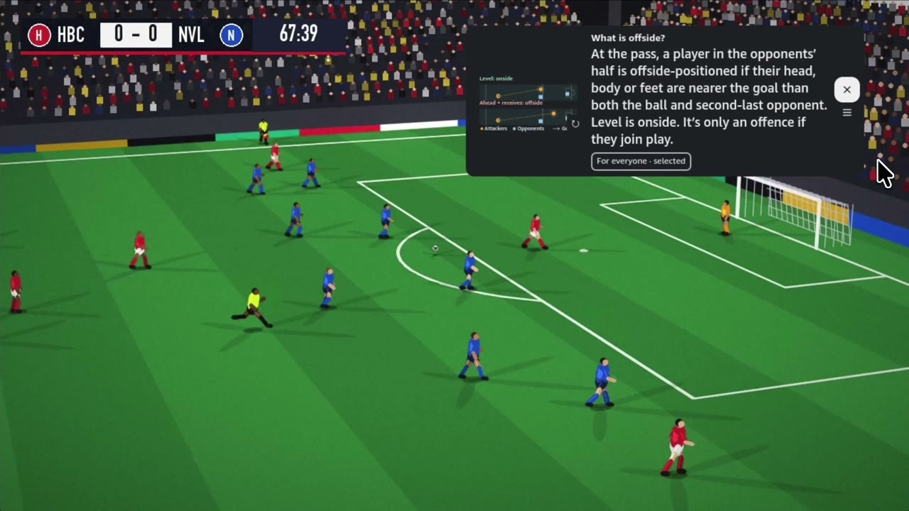
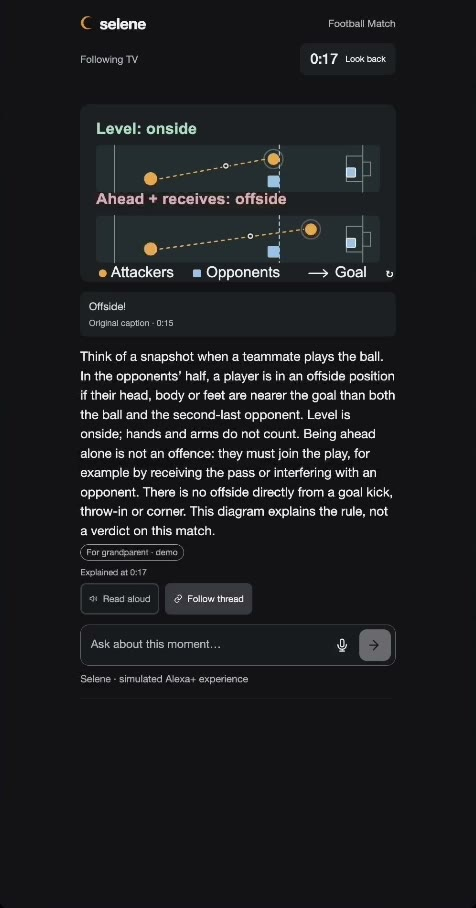

<!doctype html>
<!-- README art for SELENE. One page, scenes: ?s=banner | thumb | g1..g4 (gallery) | loop | arch | evidence.
     Every frame is a pure function of t (window.seek), so generate-readme-assets.py can render exact GIF loops. -->
<html><head><meta charset="utf-8">
<style>
@font-face{font-family:Inter;src:url(fonts/Inter.ttf);font-weight:100 900}
@font-face{font-family:Fraunces;src:url(fonts/Fraunces-Italic.ttf);font-style:italic;font-weight:100 900}
@font-face{font-family:JBM;src:url(fonts/JetBrainsMono.ttf);font-weight:100 800}
:root{--ink:#07080d;--gold:#ffc56b;--orange:#ff9900;--silver:#e8ecf6;--muted:#8b91a7;--cyan:#3bd3ff;--mint:#7fe0b0;--red:#ff6b5b;--line:rgba(232,236,246,.14)}
*{box-sizing:border-box;margin:0;padding:0}
html,body{background:var(--ink);overflow:hidden}
body{font-family:Inter,sans-serif;color:var(--silver);-webkit-font-smoothing:antialiased}
#stage{position:relative;overflow:hidden;background:radial-gradient(1400px 800px at 70% 10%,#1c2457 0%,#0f1330 45%,#07080d 100%)}
.a{position:absolute}
.label{font-size:15px;font-weight:700;letter-spacing:.22em;text-transform:uppercase;color:var(--muted)}
.serif{font-family:Fraunces,serif;font-style:italic}
.mono{font-family:JBM,monospace}
.card{background:linear-gradient(180deg,rgba(26,31,63,.94),rgba(13,16,38,.94));border:1px solid var(--line);border-radius:22px;box-shadow:0 30px 80px rgba(0,0,0,.45)}
.chip{display:inline-flex;align-items:center;gap:10px;padding:8px 18px;border-radius:999px;border:1px solid rgba(232,236,246,.22);background:rgba(20,23,48,.8);font-weight:600;white-space:nowrap}
.k{color:var(--orange);font-weight:700}
canvas.sky{position:absolute;inset:0}
</style></head><body><div id="stage"></div>
<script>
'use strict';
// the real Selene mark (selene/assets/selene-mark.svg), viewBox 0 0 48 48
const MARK = 'M36 36A20 20 0 1 1 36 8 17 17 0 1 0 36 36Z';
const logo = (s, c = '#ff9900') => `<svg width="${s}" height="${s}" viewBox="0 0 48 48"><path d="${MARK}" fill="${c}"/></svg>`;
const S = new URLSearchParams(location.search).get('s') || 'banner';
const st = document.getElementById('stage');
const h = (html, p = st) => { const t = document.createElement('template'); t.innerHTML = html.trim(); const e = t.content.firstChild; p.appendChild(e); return e; };
const clamp = (x, a = 0, b = 1) => Math.min(b, Math.max(a, x));
const P = (t, a, b) => clamp((t - a) / (b - a));
const io = x => x < .5 ? 4 * x * x * x : 1 - Math.pow(-2 * x + 2, 3) / 2;
const hash = i => { const x = Math.sin(i * 127.1 + 311.7) * 43758.5453; return x - Math.floor(x); };
// star field; tw = twinkle phase in radians (callers pass whole cycles per loop)
function sky(w, hh, n, seed = 1) {
  const c = h(`<canvas class="sky" width="${w}" height="${hh}"></canvas>`); const g = c.getContext('2d');
  const stars = Array.from({ length: n }, (_, i) => [hash(i + seed) * w, hash(i * 3 + seed) * hh, .4 + hash(i * 7 + seed) * 1.4, hash(i * 11 + seed) * 6.28]);
  return tw => { g.clearRect(0, 0, w, hh); stars.forEach(([x, y, r, ph]) => { g.globalAlpha = .25 + .55 * (.5 + .5 * Math.sin(tw + ph)); g.fillStyle = r > 1.4 ? '#ffe3a6' : '#e8ecf6'; g.beginPath(); g.arc(x, y, r, 0, 7); g.fill(); }); };
}
const SCENES = {};
let RENDER = () => {};

// ------------------------------------------------------------------ banner 2400x760
SCENES.banner = () => {
  st.style.cssText = 'width:2400px;height:760px';
  sky(2400, 760, 420, 3)(1.3);
  h(`<svg class="a" width="2400" height="760" style="left:0;top:0"><path d="M-40 640 Q900 60 2440 260" fill="none" stroke="rgba(255,197,107,.22)" stroke-width="2" stroke-dasharray="2 10"/></svg>`);
  h(`<div class="a" style="left:-80px;top:-60px;width:900px;height:900px;border-radius:50%;background:radial-gradient(circle,rgba(255,153,0,.20),rgba(255,153,0,.04) 45%,transparent 68%)"></div>`);
  h(`<div class="a" style="left:150px;top:150px;display:flex;align-items:center;gap:40px">${logo(230)}
      <div style="font-size:230px;font-weight:600;letter-spacing:-.03em;line-height:1">selene</div></div>`);
  h(`<div class="a" style="left:162px;top:420px;font-size:44px;letter-spacing:-.01em;color:#c9cee0"><span class="k">Se</span>e &amp; <span class="k">LE</span>arn through <span class="k">N</span>arrative <span class="k">E</span>xplanation</div>`);
  h(`<div class="a serif" style="left:162px;top:494px;font-size:50px;color:var(--gold);font-weight:350">Ask about the moment. Selene explains it, then steps aside.</div>`);
  h(`<div class="a" style="left:162px;top:604px;display:flex;gap:16px;font-size:26px">
      <span class="chip"><span style="width:10px;height:10px;border-radius:50%;background:var(--orange)"></span>Vega OS</span>
      <span class="chip"><span style="width:10px;height:10px;border-radius:50%;background:var(--orange)"></span>Fire OS</span>
      <span class="chip"><span style="width:12px;height:12px;border-radius:50%;border:2.5px solid var(--cyan)"></span>Alexa+ ready · MCP</span>
      <span class="chip">SVG ⇄ AVG</span></div>`);
  h(`<div class="a" style="left:1500px;top:110px;width:780px;height:439px;border-radius:18px;padding:10px;background:#0b0c12;box-shadow:0 0 0 1.5px rgba(232,236,246,.14),0 50px 120px rgba(0,0,0,.6)">
      </div>`);
  h(`<div class="a" style="left:1830px;top:549px;width:120px;height:40px;background:linear-gradient(#15161d,#0b0c12);clip-path:polygon(30% 0,70% 0,100% 100%,0 100%)"></div>`);
  h(`<div class="a" style="left:2140px;top:300px;width:200px;height:400px;border-radius:30px;padding:9px;background:#0b0c12;box-shadow:0 0 0 1.5px rgba(232,236,246,.18),0 40px 90px rgba(0,0,0,.65)">
      </div>`);
};

// ------------------------------------------------------------------ project thumbnail 1500x1000 (3:2)
SCENES.thumb = () => {
  st.style.cssText = 'width:1500px;height:1000px';
  sky(1500, 1000, 300, 5)(1.3);
  h(`<svg class="a" width="1500" height="1000" style="left:0;top:0"><path d="M-40 900 Q600 120 1540 300" fill="none" stroke="rgba(255,197,107,.22)" stroke-width="2" stroke-dasharray="2 10"/></svg>`);
  h(`<div class="a" style="left:-160px;top:-200px;width:800px;height:800px;border-radius:50%;background:radial-gradient(circle,rgba(255,153,0,.20),rgba(255,153,0,.04) 45%,transparent 68%)"></div>`);
  h(`<div class="a" style="left:90px;top:56px;display:flex;align-items:center;gap:26px">${logo(150)}
      <div style="font-size:150px;font-weight:600;letter-spacing:-.03em;line-height:1">selene</div></div>`);
  h(`<div class="a" style="left:98px;top:226px;font-size:38px;letter-spacing:-.01em;color:#c9cee0"><span class="k">Se</span>e &amp; <span class="k">LE</span>arn through <span class="k">N</span>arrative <span class="k">E</span>xplanation</div>`);
  h(`<div class="a serif" style="left:96px;top:284px;font-size:40px;color:var(--gold);font-weight:350">Ask about the moment. Selene explains it, then steps aside.</div>`);
  h(`<div class="a" style="left:96px;top:362px;display:flex;gap:12px;font-size:22px">
      <span class="chip"><span style="width:9px;height:9px;border-radius:50%;background:var(--orange)"></span>Vega OS</span>
      <span class="chip"><span style="width:9px;height:9px;border-radius:50%;background:var(--orange)"></span>Fire OS</span>
      <span class="chip"><span style="width:11px;height:11px;border-radius:50%;border:2.5px solid var(--cyan)"></span>Alexa+ ready</span>
      <span class="chip">SVG ⇄ AVG</span></div>`);
  h(`<div class="a" style="left:96px;top:452px;width:900px;height:506px;border-radius:18px;padding:10px;background:#0b0c12;box-shadow:0 0 0 1.5px rgba(232,236,246,.14),0 50px 120px rgba(0,0,0,.6)">
      </div>`);
  h(`<div class="a" style="left:1040px;top:418px;width:270px;height:540px;border-radius:36px;padding:11px;background:#0b0c12;box-shadow:0 0 0 1.5px rgba(232,236,246,.18),0 40px 90px rgba(0,0,0,.65)">
      </div>`);
};

// ------------------------------------------------------------------ Devpost gallery 1500x1000 (3:2): ?s=g1..g4, frames from the raw recordings
const gHead = (label, title) => {
  st.style.cssText = 'width:1500px;height:1000px';
  sky(1500, 1000, 260, label.length)(1.3);
  h(`<div class="a" style="left:-200px;top:-260px;width:760px;height:760px;border-radius:50%;background:radial-gradient(circle,rgba(255,153,0,.16),transparent 66%)"></div>`);
  h(`<div class="a" style="left:80px;top:60px;display:flex;align-items:center;gap:14px">${logo(34)}<span class="label" style="font-size:17px">${label}</span></div>`);
  h(`<div class="a" style="left:80px;top:104px;width:1340px;font-size:54px;font-weight:700;letter-spacing:-.03em;line-height:1.1">${title}</div>`);
};
const gPhone = (x, y, w, src) => h(`<div class="a" style="left:${x}px;top:${y}px;width:${w}px;height:${Math.round(w * 908 / 476) + 20}px;border-radius:${w / 9}px;padding:10px;background:#0b0c12;box-shadow:0 0 0 1.5px rgba(232,236,246,.18),0 30px 80px rgba(0,0,0,.6)">
    </div>`);
const gTV = (x, y, w, src) => h(`<div class="a" style="left:${x}px;top:${y}px;width:${w}px;height:${Math.round(w * 9 / 16)}px;border-radius:16px;padding:9px;background:#0b0c12;box-shadow:0 0 0 1.5px rgba(232,236,246,.14),0 40px 100px rgba(0,0,0,.6)">
    </div>`);
const gCap = (x, y, w, n, a, b) => h(`<div class="a" style="left:${x}px;top:${y}px;width:${w}px">
    <div style="display:flex;align-items:baseline;gap:10px">${n ? `<span class="serif" style="font-size:28px;color:var(--gold)">${n}</span>` : ''}<span style="font-size:26px;font-weight:700;letter-spacing:-.02em">${a}</span></div>
    <div style="font-size:18px;line-height:1.4;color:#b7bcd0;margin-top:4px">${b}</div></div>`);
const em = s => `<span class="serif" style="color:var(--gold);font-weight:400">${s}</span>`;
SCENES.g1 = () => {
  gHead('On your phone', `Ask. See it drawn. ${em('Talk about it.')}`);
  [['ph_ask', '01', 'Ask', 'Type or say it on the paired phone.'], ['ph_offside', '02', 'Drawn for this moment', 'Offside, explained with a live diagram.'],
   ['ph_talk', '03', 'Something to talk about', 'At full time, a prompt for the whole family.']]
    .forEach(([src, n, a, b], i) => { const x = 110 + i * 450; gCap(x, 214, 380, n, a, b); gPhone(x + 25, 310, 330, src); });
};
SCENES.g2 = () => {
  gHead('On the TV', `Ask about the moment. ${em('The answer steps aside.')}`);
  gTV(80, 300, 650, 'tv_ask'); gTV(770, 300, 650, 'tv_answer');
  gCap(80, 700, 650, '01', 'Ask', 'By voice, remote or phone, while the match keeps playing.');
  gCap(770, 700, 650, '02', 'Answer, placed with care', 'The explanation and its diagram open in a quiet corner; play never stops.');
  h(`<div class="a" style="left:80px;top:860px;display:flex;gap:14px;font-size:20px"><span class="chip">Real Vega OS recording</span><span class="chip">Spoiler-free: only what was shown so far</span></div>`);
};
SCENES.g3 = () => {
  gHead('Follow thread', `The diagram ${em('grows with the story.')}`);
  [['ph_thread_1.5', '0:10', 'A kingdom'], ['ph_thread_8.5', '0:17', 'Alisson appears'], ['ph_thread_13.5', '1:25', 'A secret meeting'], ['ph_thread_19.5', '1:47', 'Protected all along']]
    .forEach(([src, t, a], i) => { const x = 95 + i * 340; gCap(x, 214, 300, t, a, ''); gPhone(x, 290, 290, src); });
  h(`<div class="a" style="left:80px;top:910px;font-size:20px;color:#b7bcd0">The Missing Crown · no clicks: each update waits for a real story development, never ahead of the film.</div>`);
};
SCENES.g4 = () => {
  gHead('Stories too', `“Who is Alisson?” ${em('Answered without spoilers.')}`);
  gTV(80, 250, 920, 'tv_king_answer');
  gPhone(1080, 230, 330, 'ph_thread_8.5');
  gCap(80, 800, 920, '', 'On the TV and the paired phone', 'Selene uses only what the film has shown so far, so it explains who he is without revealing why he is missing.');
};

// ------------------------------------------------------------------ the moment loop 1600x760, 6 s
SCENES.loop = () => {
  st.style.cssText = 'width:1600px;height:760px';
  const sk = sky(1600, 760, 220, 9);
  h(`<div class="a" style="left:80px;top:56px;display:flex;align-items:center;gap:14px">${logo(30)}<span class="label">The Selene moment</span></div>`);
  h(`<div class="a" style="left:80px;top:96px;font-size:46px;font-weight:700;letter-spacing:-.03em">Ask. Read the moment. Draw it. <span class="serif" style="color:var(--gold);font-weight:400">Step aside.</span></div>`);
  const X = [80, 460, 840, 1220], Y = 200, W = 300, HH = 400;
  const T = [['01', 'Ask', 'Voice, D-pad, or the paired phone. One question, no chat thread.'],
    ['02', 'Read the moment', 'Completed captions up to now, frames before it (and after, on recorded video), the film’s own graph.'],
    ['03', 'Draw it', 'One Moment Response, rendered as animated SVG or as AVG for Alexa.'],
    ['04', 'Step aside', 'Placed away from the action; playback never stops unless you ask.']];
  const cards = T.map(([n, a, b], i) => h(`<div class="a card" style="left:${X[i]}px;top:${Y}px;width:${W}px;height:${HH}px;padding:26px">
      <div class="serif" style="font-size:30px;color:var(--gold)">${n}</div>
      <div style="font-size:32px;font-weight:700;letter-spacing:-.02em;margin-top:2px">${a}</div>
      <div style="font-size:18px;line-height:1.45;color:#b7bcd0;margin-top:10px">${b}</div>
      <svg class="viz" width="248" height="150" viewBox="0 0 248 150" style="position:absolute;left:26px;bottom:24px"></svg></div>`));
  const viz = cards.map(c => c.querySelector('.viz'));
  viz[0].innerHTML = `${Array.from({ length: 20 }, (_, i) => `<rect class="b" x="${18 + i * 11}" y="40" width="6" height="10" rx="3" fill="#ff9900"/>`).join('')}
    <rect x="18" y="98" width="212" height="40" rx="20" fill="#1e2342" stroke="rgba(232,236,246,.25)"/><text x="124" y="124" text-anchor="middle" font-family="Fraunces" font-style="italic" font-size="20" fill="#e8ecf6">“What is offside?”</text>`;
  viz[1].innerHTML = `<line x1="10" y1="70" x2="238" y2="70" stroke="rgba(232,236,246,.25)" stroke-width="2"/>
    ${[-10, -8, -6, -4, -2, 2, 4, 6, 8, 10].map(d => `<rect class="fr" x="${124 + d * 11 - 8}" y="34" width="16" height="22" rx="3" fill="#7fe0b0"/>`).join('')}
    <line x1="124" y1="22" x2="124" y2="118" stroke="#ff9900" stroke-width="3"/><text x="124" y="16" text-anchor="middle" font-family="JBM" font-size="12" fill="#ff9900">now</text>
    ${[0, 1, 2, 3].map(i => `<rect class="cp" x="${14 + i * 27}" y="86" width="22" height="10" rx="5" fill="#ffc56b"/>`).join('')}
    ${[0, 1, 2, 3].map(i => `<rect x="${132 + i * 27}" y="86" width="22" height="10" rx="5" fill="rgba(232,236,246,.12)"/>`).join('')}
    <text x="14" y="138" font-family="Inter" font-size="13" fill="#8b91a7">captions ≤ now · no spoilers</text>`;
  viz[2].innerHTML = `<rect x="6" y="40" width="236" height="96" rx="10" fill="rgba(70,160,100,.14)" stroke="rgba(127,224,176,.5)" stroke-width="2"/>
    <line x1="156" y1="46" x2="156" y2="130" stroke="#e8ecf6" stroke-width="2" stroke-dasharray="5 5"/>
    <circle cx="40" cy="104" r="8" fill="#ffc56b"/><rect x="150" y="104" width="13" height="13" rx="3" fill="#8fb3ff"/>
    <path class="ps" d="M40 104 L156 70" stroke="#ffc56b" stroke-width="3" fill="none" pathLength="1" stroke-dasharray="1 1"/><circle cx="156" cy="70" r="8" fill="#ffc56b" stroke="#fff" stroke-width="2"/>
    <rect x="54" y="2" width="140" height="28" rx="14" fill="#1e2342"/><rect class="kn" y="5" width="60" height="22" rx="11"/><text class="ts" x="86" y="21" text-anchor="middle" font-family="Inter" font-weight="800" font-size="13">SVG</text>
    <text class="ta" x="162" y="21" text-anchor="middle" font-family="Inter" font-weight="800" font-size="13">AVG</text>`;
  viz[3].innerHTML = `<rect x="4" y="4" width="240" height="135" rx="10" fill="#14361f" stroke="rgba(232,236,246,.25)" stroke-width="2"/>
    <rect x="182" y="46" width="56" height="54" rx="6" fill="none" stroke="#ff6b5b" stroke-width="2.5"/><text x="210" y="116" text-anchor="middle" font-family="Inter" font-weight="700" font-size="11" fill="#ff6b5b">goal</text>
    <rect class="pn" y="14" width="96" height="44" rx="7" fill="rgba(13,16,38,.92)" stroke="#ff9900" stroke-width="2"/>
    <g class="cr"><path d="${MARK}" fill="#ff9900" transform="translate(14,96) scale(.6)"/></g>`;
  const edges = h(`<svg class="a" width="1600" height="760" style="left:0;top:0">${[0, 1, 2].map(i => `<path class="e" d="M${X[i] + W + 6} ${Y + 200} L${X[i + 1] - 6} ${Y + 200}" stroke="#ff9900" stroke-width="3" stroke-dasharray="4 10" stroke-linecap="round"/>`).join('')}
    <path class="e" d="M${X[3] + W / 2} ${Y + HH + 8} C${X[3] + W / 2} ${Y + HH + 70} ${X[0] + W / 2} ${Y + HH + 70} ${X[0] + W / 2} ${Y + HH + 8}" fill="none" stroke="rgba(232,236,246,.3)" stroke-width="2" stroke-dasharray="4 10"/></svg>`);
  h(`<div class="a" style="left:0;top:${Y + HH + 50}px;width:1600px;text-align:center;font-size:19px;color:var(--muted)">Playback keeps playing &nbsp;·&nbsp; nothing past the sampled moment &nbsp;·&nbsp; silent by default &nbsp;·&nbsp; the next question starts fresh</div>`);
  const L = 6, w = 2 * Math.PI / L;  // every periodic term completes whole cycles in L, so the GIF loops seamlessly
  RENDER = t => {
    sk(t * w * 2);
    const act = Math.floor((t % L) / 1.5);
    cards.forEach((c, i) => { const on = i === act; c.style.boxShadow = on ? '0 0 0 2px #ff9900,0 0 60px rgba(255,153,0,.28),0 30px 80px rgba(0,0,0,.45)' : ''; c.style.transform = `translateY(${on ? -8 : 0}px)`; });
    edges.querySelectorAll('.e').forEach(e => e.style.strokeDashoffset = (-t * 28).toFixed(1));
    viz[0].querySelectorAll('.b').forEach((b, i) => { const v = .15 + .85 * Math.abs(Math.sin(t * w * 4 + i * .7)); b.setAttribute('height', (6 + v * 44).toFixed(1)); b.setAttribute('y', (72 - (6 + v * 44) / 2).toFixed(1)); });
    const ph = (t % L) / L;
    viz[1].querySelectorAll('.fr').forEach((f, i) => f.style.opacity = P(ph, .05 + i * .05, .1 + i * .05) * (1 - P(ph, .92, 1)));
    viz[1].querySelectorAll('.cp').forEach((f, i) => f.style.opacity = P(ph, .2 + i * .06, .26 + i * .06) * (1 - P(ph, .92, 1)));
    viz[2].querySelector('.ps').style.strokeDashoffset = (1 - io(P(ph, .1, .4)) * (1 - P(ph, .9, 1))).toFixed(3);
    const avg = ph > .5 && ph < .95, kn = viz[2].querySelector('.kn');
    kn.setAttribute('x', avg ? 132 : 56); kn.setAttribute('fill', avg ? 'rgba(59,211,255,.25)' : 'rgba(255,153,0,.25)');
    viz[2].querySelector('.ts').setAttribute('fill', avg ? '#8b91a7' : '#ff9900'); viz[2].querySelector('.ta').setAttribute('fill', avg ? '#3bd3ff' : '#8b91a7');
    const pn = viz[3].querySelector('.pn');
    const mv = io(P(ph, .25, .4)) - io(P(ph, .9, 1)), hide = io(P(ph, .5, .6)) - io(P(ph, .8, .9));
    pn.setAttribute('x', (138 - 124 * clamp(mv)).toFixed(1)); pn.style.opacity = (1 - hide).toFixed(2);
    viz[3].querySelector('.cr').style.opacity = hide.toFixed(2);
  };
};

// ------------------------------------------------------------------ architecture 1600x1000, 4 s loop
// Official AWS Architecture Icons (aws/*.svg). Numbered pulses walk one question end to end.
SCENES.arch = () => {
  st.style.cssText = 'width:1600px;height:1000px';
  const sk = sky(1600, 1000, 200, 5);
  h(`<div class="a" style="left:60px;top:40px;display:flex;align-items:center;gap:14px">${logo(30)}<span class="label">How Selene is built · one question, end to end</span></div>`);
  const ico = (f, s = 44) => ``;
  const node = (x, y, w, hh, icon, title, sub, col = 'rgba(232,236,246,.16)', dash = false) => h(`<div class="a card" style="left:${x}px;top:${y}px;width:${w}px;height:${hh}px;padding:16px 18px;border:${dash ? '2px dashed' : '1.5px solid'} ${col};display:flex;gap:14px;align-items:flex-start">
      ${icon}<div><div style="font-size:20px;font-weight:700;letter-spacing:-.01em;line-height:1.2">${title}</div><div style="font-size:14.5px;line-height:1.4;color:#aab0c6;margin-top:5px">${sub}</div></div></div>`);
  const phoneGlyph = `<svg width="44" height="44" viewBox="0 0 44 44" style="flex:none"><rect x="12" y="3" width="20" height="38" rx="5" fill="none" stroke="#e8ecf6" stroke-width="2.5"/><rect x="18" y="7" width="8" height="2.5" rx="1.2" fill="#e8ecf6"/><path d="M27 30A6 6 0 1 1 27 20 5 5 0 1 0 27 30Z" fill="#ff9900"/></svg>`;
  h(`<div class="a label" style="left:60px;top:116px;font-size:13px">Viewers</div>`);
  const V = [node(60, 140, 330, 118, ico('AWSIoTFireTV'), 'Fire TV · Vega OS app', 'React Native for Vega · own player + Media Controls sessions'),
    node(60, 278, 330, 118, ico('AWSIoTFireTVStick'), 'Fire TV · Fire OS app', 'Android TV build · same relay contract · Select-hold voice'),
    node(60, 416, 330, 118, phoneGlyph, 'Paired phone', 'Private SVG explainer · type or speak · 6-digit code'),
    node(60, 554, 330, 134, ico('AWSIoTAlexaVoiceService'), 'Alexa+ look-alike', 'Simulated with Selene’s own agent over MCP · real Alexa+ when access opens', 'rgba(59,211,255,.7)', true)];
  // AWS cloud boundary
  h(`<div class="a" style="left:440px;top:110px;width:760px;height:800px;border:2px solid rgba(232,236,246,.28);border-radius:6px"></div>`);
  h(`<div class="a" style="left:440px;top:110px;display:flex;align-items:center;gap:10px;padding-right:14px;background:#0f1330">${ico('AWSCloudlogo', 40)}<span style="font-size:16px;font-weight:700">AWS Cloud · us-east-1</span></div>`);
  const LS = h(`<div class="a card" style="left:480px;top:176px;width:680px;height:520px;padding:20px 22px;border:1.5px solid rgba(237,113,0,.75);box-shadow:0 0 70px rgba(255,153,0,.14),0 30px 80px rgba(0,0,0,.45)">
      <div style="display:flex;align-items:center;gap:14px">${ico('AmazonLightsail', 46)}<div><div style="font-size:21px;font-weight:700">Amazon Lightsail · container service</div><div class="mono" style="font-size:13.5px;color:var(--muted)">selene-phone-demo-v2</div></div>
        <div style="margin-left:auto;display:flex;align-items:center;gap:10px">${logo(34)}<div style="font-size:22px;font-weight:700;letter-spacing:-.02em">Selene relay</div></div></div>
      <div class="mods" style="display:grid;grid-template-columns:1fr 1fr;gap:10px;margin-top:18px"></div>
      <div class="mono" style="position:absolute;left:22px;bottom:16px;font-size:13px;color:var(--muted)">Node.js · /api/moment · /api/placement · /api/skills/mcp · /api/wake</div></div>`);
  const MODS = [['Moment agent', 'answer + animated SVG / WAAPI'], ['Rendered feedback', 'headless Chromium, ≤ 2 revisions'], ['Smart placement', 'YOLOX-Nano ONNX, local'],
    ['SVG → AVG 1.2', 'same answer for Alexa / APL'], ['Skills MCP server', 'explain · catch up · trivia · playback'], ['Alexa+ look-alike orchestrator', 'MCP client + tool-choice routing'],
    ['Thread + Catch me up', 'reviewed, spoiler-bounded'], ['Conversation agent', '“something to talk about”'], ['Voice personalization', 'consented, local ECAPA'], ['Pairing + private routes', 'token-scoped phone access']];
  const mods = MODS.map(([a, b]) => h(`<div style="padding:10px 13px;border-radius:12px;background:rgba(7,8,13,.45);border:1px solid var(--line)"><div style="font-size:16px;font-weight:700">${a}</div><div style="font-size:13px;color:#9aa0b8;margin-top:2px">${b}</div></div>`, LS.querySelector('.mods')));
  node(480, 760, 290, 118, ico('AmazonEventBridgeScheduler'), 'EventBridge Scheduler', 'rate(1 minute) · infra/aws stack', 'rgba(231,21,123,.6)');
  node(870, 760, 290, 118, ico('AWSLambda'), 'AWS Lambda · selene-wake', 'POST /api/wake · Follow thread + Talk together', 'rgba(237,113,0,.6)');
  h(`<div class="a label" style="left:1240px;top:116px;font-size:13px">Outside the TV</div>`);
  node(1240, 176, 300, 150, `<svg width="44" height="44" viewBox="0 0 44 44" style="flex:none"><circle cx="22" cy="22" r="18" fill="none" stroke="#ffc56b" stroke-width="2.5"/><path d="M14 22h16M22 14v16" stroke="#ffc56b" stroke-width="2.5"/></svg>`, 'Model provider', '<span class="mono" style="font-size:13px">AGENT_PROVIDER_MODEL</span><br>HTTPS · structured outputs · function calls', 'rgba(255,197,107,.6)');
  node(1240, 400, 300, 170, `<svg width="44" height="44" viewBox="0 0 44 44" style="flex:none"><rect x="5" y="9" width="34" height="26" rx="4" fill="none" stroke="#7fe0b0" stroke-width="2.5"/><path d="M5 17h34M13 9v26" stroke="#7fe0b0" stroke-width="2"/></svg>`, 'Film evidence', 'Completed captions ≤ now · per-film graph · frames before now (and after, recorded only) · prepared examples');
  // edges (ids double as pulse tracks)
  const E = h(`<svg class="a" width="1600" height="1000" style="left:0;top:0">
      <path id="e0" d="M390 199 C430 199 440 300 480 300" stroke="#ff9900"/>
      <path id="e1" d="M390 337 C430 337 440 380 480 380" stroke="#ff9900"/>
      <path id="e2" d="M390 475 C430 475 440 460 480 460" stroke="#ff9900"/>
      <path id="e3" d="M390 621 C430 621 440 540 480 540" stroke="#3bd3ff"/>
      <path id="e4" d="M1160 485 C1200 485 1200 485 1240 485" stroke="rgba(232,236,246,.7)"/>
      <path id="e5" d="M1160 250 C1200 250 1200 250 1240 250" stroke="#ffc56b"/>
      <path id="e6" d="M770 816 L870 816" stroke="#e7157b"/>
      <path id="e7" d="M1015 760 L1015 696" stroke="#ed7100"/>
    </svg>`);
  const paths = [...E.querySelectorAll('path')];
  paths.forEach(p => { p.setAttribute('fill', 'none'); p.setAttribute('stroke-width', '3'); p.setAttribute('stroke-dasharray', '5 11'); p.setAttribute('stroke-linecap', 'round'); p.style.opacity = '.75'; });
  const pulse = (c) => h(`<div class="a" style="width:16px;height:16px;border-radius:50%;background:#fff;box-shadow:0 0 14px ${c},0 0 32px ${c}"></div>`);
  const pA = pulse('#ff9900'), pB = pulse('#e7157b');
  const at = (i, u) => { const p = paths[i], L = p.getTotalLength(); return p.getPointAtLength(clamp(u) * L); };
  // ① ask → ② read only this moment → ③ generate + render check → ④ answer back
  const STEPS = [['1', 'Ask', '#ff9900'], ['2', 'Read only this moment', '#e8ecf6'], ['3', 'Generate + render check', '#ffc56b'], ['4', 'Answer, placed or on the phone', '#ff9900'], ['5', 'Scheduled wake-up: thread + talk together', '#e7157b']];
  const leg = h(`<div class="a" style="left:60px;top:930px;width:1480px;display:flex;gap:14px;flex-wrap:nowrap"></div>`);
  const chips = STEPS.map(([n, s, c]) => h(`<div class="chip" style="font-size:16px;padding:7px 15px"><span style="width:24px;height:24px;border-radius:50%;background:${c};color:#07080d;font-weight:800;display:inline-flex;align-items:center;justify-content:center;font-size:13px">${n}</span>${s}</div>`, leg));
  const L = 4;
  RENDER = t => {
    sk(t * Math.PI / 2);
    paths.forEach(p => p.style.strokeDashoffset = (-t * 32).toFixed(1));
    const q = t % L; let pt = null, step = -1;
    if (q < .7) { pt = at(0, io(q / .7)); step = 0; }
    else if (q < 1.4) { const u = (q - .7) / .7; pt = at(4, u < .5 ? io(u * 2) : io(2 - u * 2)); step = 1; }
    else if (q < 2.6) { const u = (q - 1.4) / 1.2; pt = at(5, u < .5 ? io(u * 2) : io(2 - u * 2)); step = 2; }
    else if (q < 3.4) { pt = at(0, 1 - io((q - 2.6) / .8)); step = 3; }
    if (pt) { pA.style.left = (pt.x - 8) + 'px'; pA.style.top = (pt.y - 8) + 'px'; pA.style.opacity = 1; } else pA.style.opacity = 0;
    const r = (t % 2) / 2, pb = r < .5 ? at(6, io(r * 2)) : at(7, io((r - .5) * 2));
    pB.style.left = (pb.x - 8) + 'px'; pB.style.top = (pb.y - 8) + 'px'; pB.style.opacity = r < .95 ? 1 : 0;
    chips.forEach((c, i) => c.style.boxShadow = (i === step || (i === 4 && r > .5)) ? `0 0 0 2px ${STEPS[i][2]}` : '');
    V[0].style.borderColor = step === 0 || step === 3 ? '#ff9900' : '';
    const k = step === 2 ? 0 : step === 1 ? 2 : step === 3 ? 1 : -1;
    mods.forEach((m, i) => m.style.borderColor = i === k ? 'rgba(255,153,0,.75)' : '');
  };
};

// ------------------------------------------------------------------ evidence window 1600x760, 6 s
SCENES.evidence = () => {
  st.style.cssText = 'width:1600px;height:760px';
  const sk = sky(1600, 760, 180, 13);
  h(`<div class="a" style="left:70px;top:50px;display:flex;align-items:center;gap:14px">${logo(30)}<span class="label">What the agent sees · Football Match · question at 0:17</span></div>`);
  h(`<div class="a" style="left:70px;top:90px;font-size:44px;font-weight:700;letter-spacing:-.03em">Only this moment. <span class="serif" style="color:var(--gold);font-weight:400">Nothing said after it.</span></div>`);
  const X0 = 90, X1 = 1130, CX = (X0 + X1) / 2, sx = d => CX + d * (X1 - X0) / 22;
  h(`<div class="a" style="left:${X0}px;top:400px;width:${X1 - X0}px;height:3px;background:rgba(232,236,246,.2)"></div>`);
  h(`<div class="a" style="left:${CX - 1.5}px;top:190px;width:3px;height:360px;background:var(--orange);box-shadow:0 0 18px var(--orange)"></div>`);
  h(`<div class="a mono" style="left:${CX - 80}px;top:556px;width:160px;text-align:center;font-size:15px;color:var(--orange)">now · 0:17</div>`);
  h(`<div class="a mono" style="left:${CX + 18}px;top:192px;font-size:13px;color:var(--mint);opacity:.85">after now · recorded video only (a live stream has none)</div>`);
  h(`<div class="a mono" style="left:${X0}px;top:192px;width:${CX - X0 - 18}px;text-align:right;font-size:13px;color:var(--mint);opacity:.85">before now · always</div>`);
  const D = [-10, -8, -6, -4, -2, 2, 4, 6, 8, 10], TT = [7, 9, 11, 13, 15, 19, 21, 23, 25, 27];
  const thumbs = D.map((d, i) => h(`<div class="a" style="left:${sx(d) - 46}px;top:${i % 2 ? 300 : 222}px;width:92px;text-align:center">
      
      <div class="mono" style="font-size:12px;color:var(--mint);margin-top:3px">${d > 0 ? '+' : '−'}${Math.abs(d)} s</div></div>`));
  const CAPS = [[9.9, 11.2, 'Lovely ball over the top!'], [11.4, 13.4, 'He’s in behind…'], [13.45, 14.7, 'but the flag is up!'], [15, 15.5, 'Offside!'], [15.5, 17.0, 'The striker can’t believe it.'],
    [18.3, 19.4, 'Let’s see it again.'], [19.5, 21.5, 'As the ball is played…'], [21.6, 23.4, '…beyond the last defender.']];
  const colL = h(`<div class="a" style="left:${X0}px;top:428px;width:${CX - X0 - 24}px;display:flex;flex-wrap:wrap;gap:8px;justify-content:flex-end"></div>`);
  const colR = h(`<div class="a" style="left:${CX + 24}px;top:428px;width:${X1 - CX - 24}px;display:flex;flex-wrap:wrap;gap:8px"></div>`);
  const caps = CAPS.map(([a, b, s]) => { const past = b <= 17.4;
    return h(`<div style="height:36px;border-radius:10px;padding:0 12px;display:flex;align-items:center;font-size:15px;white-space:nowrap;
      ${past ? 'background:rgba(255,197,107,.16);border:1.5px solid rgba(255,197,107,.6);color:#ffe3a6' : 'background:rgba(232,236,246,.05);border:1.5px dashed rgba(232,236,246,.2);color:rgba(232,236,246,.4)'}">${past ? s : 'not sent'}</div>`, past ? colL : colR); });
  h(`<div class="a" style="left:${X0}px;top:590px;display:flex;gap:26px;font-size:16px;color:var(--muted)"><span><b style="color:var(--mint)">■</b> frames t−10…−2 s always · +2…+10 s recorded video only, never live</span><span><b style="color:var(--gold)">■</b> completed captions ≤ now</span><span>┄ future dialogue is never sent</span></div>`);
  const graph = h(`<div class="a chip" style="left:${X0}px;top:650px;font-size:16px">Film graph: <b>striker</b> · <b>last defender</b> · <b>assistant</b> · <b>number ten</b></div>`);
  const out = h(`<div class="a card" style="left:1200px;top:200px;width:330px;height:470px;padding:24px">
      <div style="display:flex;align-items:center;gap:10px">${logo(22)}<span class="label" style="font-size:13px">Moment Response</span></div>
      ${['Answer · plain words', 'Visual · SVG ⇄ AVG', 'Playback · keeps playing', 'Follow-up · thread'].map(s => `<div class="row" style="display:flex;align-items:center;gap:12px;font-size:19px;margin-top:20px"><span style="width:24px;height:24px;border-radius:50%;background:var(--mint);display:inline-flex;align-items:center;justify-content:center;color:#07080d;font-weight:900;font-size:14px">✓</span>${s}</div>`).join('')}
      <svg width="282" height="140" viewBox="0 0 282 140" style="margin-top:26px"><rect x="4" y="20" width="274" height="110" rx="12" fill="rgba(70,160,100,.14)" stroke="rgba(127,224,176,.5)" stroke-width="2"/>
        <line x1="180" y1="28" x2="180" y2="122" stroke="#e8ecf6" stroke-width="2" stroke-dasharray="5 5"/><circle cx="46" cy="96" r="9" fill="#ffc56b"/><rect x="173" y="96" width="14" height="14" rx="3" fill="#8fb3ff"/>
        <path class="mp" d="M46 96 L180 62" stroke="#ffc56b" stroke-width="3.5" fill="none" pathLength="1" stroke-dasharray="1 1"/><circle cx="180" cy="62" r="9" fill="#ffc56b" stroke="#fff" stroke-width="2"/>
        <text x="10" y="13" font-family="Inter" font-weight="700" font-size="13" fill="#7fe0b0">Level: onside</text></svg></div>`);
  const pulse = h(`<div class="a" style="width:18px;height:18px;border-radius:50%;background:#ffe3a6;box-shadow:0 0 18px #ffc56b,0 0 40px #ff9900"></div>`);
  const rows = [...out.querySelectorAll('.row')], mp = out.querySelector('.mp');
  const L = 6;
  RENDER = t => {
    sk(t * 2 * Math.PI / L * 2); const p = t % L, fo = 1 - P(p, 5.6, 6);
    thumbs.forEach((e, i) => { const a = P(p, .2 + i * .14, .4 + i * .14); e.style.opacity = a * fo; e.style.transform = `translateY(${(1 - a) * 14}px)`; });
    caps.forEach((e, i) => e.style.opacity = P(p, 1.7 + i * .1, 1.9 + i * .1) * fo);
    graph.style.opacity = P(p, 2.6, 2.9) * fo;
    const u = io(P(p, 3.0, 3.8)); pulse.style.left = (CX - 9 + (1190 - CX) * u) + 'px'; pulse.style.top = (400 - 9 - Math.sin(Math.PI * u) * 120) + 'px'; pulse.style.opacity = p > 3 && p < 3.8 ? 1 : 0;
    out.style.opacity = (.35 + .65 * P(p, 3.6, 3.9)) * (.35 + .65 * fo); out.style.boxShadow = p > 3.8 && p < 5.6 ? '0 0 0 2px #ff9900,0 30px 80px rgba(0,0,0,.45)' : '';
    rows.forEach((r, i) => r.style.opacity = P(p, 3.9 + i * .2, 4.1 + i * .2) * fo);
    mp.style.strokeDashoffset = (1 - io(P(p, 4.6, 5.3)) * fo).toFixed(3);
  };
};

SCENES[S]();
window.seek = t => { RENDER(t); return document.fonts.ready.then(() => Promise.all([...document.images].map(i => i.decode().catch(() => {})))); };
window.READY = window.seek(0);
</script></body></html>
